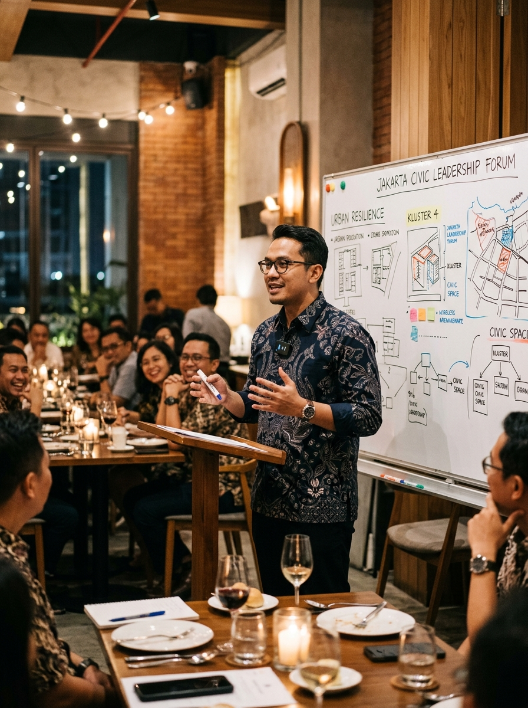
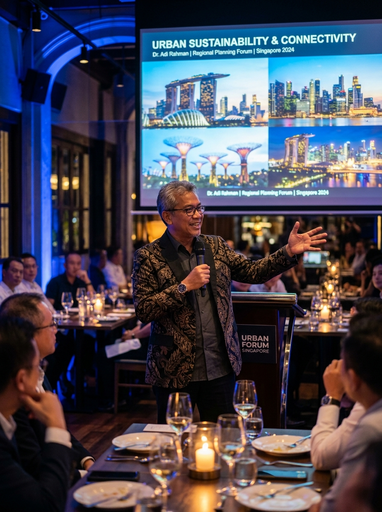
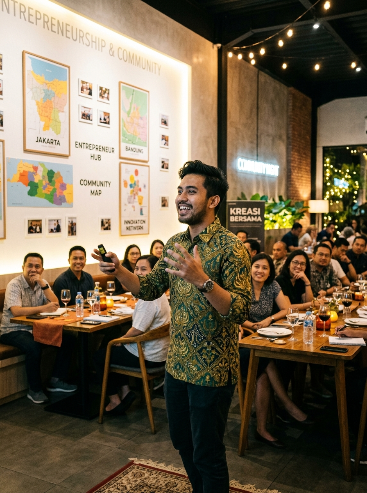

Explore session →
Vol. 01 · Public Spaces
Conversations on cities, leadership, and public life over intimate dinners.

Explore session →
Explore session →
Explore session →Deep dives into ideas that shaped leadership across generations.